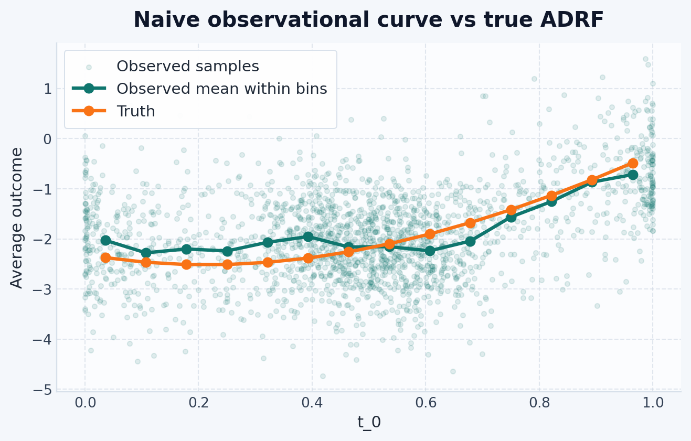

Use this guide when the treatment is numeric — such as a dose, exposure, score, or intensity.
NoteWhen To Use This Guide
Start here if you need one copy-pastable example for a continuous treatment and want to see how the estimated response curve compares to a known truth.
What we’re estimating
A continuous treatment changes the question from “treated vs. control?” to “what happens at every possible dose level?” The target is the same Average Response Function (ARF) from the methodology page:
For continuous treatments, the same curve is often called the Average Dose-Response Function (ADRF).
This is a curve, not a single number.
Tip
Analogy: think of a pharmacological dose-response curve. Different doses of a drug produce different average patient responses. We want to estimate that curve from observational data where the dose was not randomized — people received different doses for reasons that also affect the outcome.
This example compares four estimators, including one intentionally naive baseline:
Estimator
Approach
DirectNoCovariates
Fits \(\mathbb{E}_P[Y \mid T=t]\) and ignores X; observational baseline only
DirectRegressor
Fits \(\mathbb{E}_P[Y \mid X, T=t]\) and averages over X at each grid point
GPS
Fits an outcome model on treatment and an estimated treatment score from predict_density(X, T)(Hirano and Imbens 2004)
DoublyRobustPseudoOutcome
Combines an outcome model with a stabilized density model and smooths pseudo-outcomes over treatment (Kennedy et al. 2017)
Note
All causal interpretations in this guide assume consistency, no unmeasured confounding after conditioning on X, and sufficient overlap across the treatment range you want to evaluate.
def make_forest_regressor():return RandomForestRegressor( n_estimators=50, min_samples_leaf=5, random_state=0, )def curve_values(curve):"""Coerce a single-output curve to a 1D array for tables and metrics."""return np.asarray(curve, dtype=float).reshape(-1)def summarize_curve_errors(estimator_curves, truth, metric_name, metric_fn):"""Build a sorted error summary table for a dict of estimated curves."""return pl.DataFrame( {"estimator": list(estimator_curves.keys()), metric_name: [float(metric_fn(predicted, truth))for predicted in estimator_curves.values() ], } ).sort(metric_name)
Step 2: Load a confounded nonlinear dataset
dataset = SyntheticDataset2(n=2000, n_features=6, random_state=0)X, t, y = dataset.load()X = X.rename({col: f"x{i}"for i, col inenumerate(X.columns)})t_col = t.columns[0]y = y.rename({y.columns[0]: "y"})pl.concat([X.head(5), t.head(5), y.head(5)], how="horizontal")
shape: (5, 8)
x0
x1
x2
x3
x4
x5
t_0
y
f64
f64
f64
f64
f64
f64
f64
f64
1.304
0.947081
-0.703735
-1.265421
-0.623274
0.041326
0.463393
-3.312002
-2.325031
-0.218792
-1.245911
-0.732267
-0.544259
-0.3163
0.29262
-1.958108
0.411631
1.042513
-0.128535
1.366463
-0.665195
0.35151
0.663803
-1.829244
0.90347
0.094012
-0.743499
-0.921725
-0.457726
0.220195
0.530812
-2.43135
-1.009618
-0.209176
-0.159225
0.540846
0.214659
0.355373
0.00191
-2.635592
The table has six observed covariates, one numeric treatment column, and one outcome column. Here we use SyntheticDataset2, which is intentionally nonlinear and confounded: treatment assignment depends on the covariates, and the outcome surface bends with the treatment value.
where \(\sigma(\cdot)\) is the logistic sigmoid and \(v \in \mathbb{R}^d\) is a fixed dataset-specific projection. Treatment is then drawn from a mixture of Beta distributions centered around that score:
\[
T \mid X, B \sim
\begin{cases}
\mathrm{Beta}(s(X), 1 - s(X)) & \text{if } B = 1 \\
\mathrm{Beta}(99 s(X), 100 - 99 s(X)) & \text{if } B = 0
\end{cases}
\]
with \(B \sim \mathrm{Bernoulli}(0.5)\).
2c. Mean response at each treatment value
Conditionally on covariates and treatment, the mean outcome is:
\[
\mu(X, t) = -5 s(X) + 5 (t - 0.2)^2 - t^3
\]
The corresponding ADRF is the average of this nonlinear surface over the observed covariate distribution.
2d. Generate observed outcomes
Observed outcomes add Gaussian noise around that mean. This benchmark combines nonlinear confounding, curved treatment effects, and known ground truth in the exact implementation of SyntheticDataset2.
Important
This is confounding: units with larger values of the latent score \(s(X)\) receive systematically different doses, and the same score also shifts outcomes directly. An estimator that ignores X will mistake part of that latent-score effect for a treatment effect.
Step 3: Define treatment grid
Create an evaluation grid explicitly from the observed treatment table:
For a single continuous treatment, this builds 10 evenly spaced points spanning the observed treatment range. It keeps the example responsive during preview while still tracing the overall curve shape. Increase the dataset size and grid density once the end-to-end workflow is working.
Note
predict accepts the requested treatment table as its first argument and returns one average response per row in grid, averaging over the covariate sample stored during fit.
Step 4: Compute the truth
Because this is a synthetic dataset, we can compute the true average potential outcome exactly from the dataset’s closed-form response function. In the notation from the methodology page, truth_curve contains the values of \(\mu(t)\) corresponding to the rows in grid.
Before fitting any estimator, compare the raw observed averages to the true ADRF. This is the continuous-treatment version of the confounding problem: the observed association between T and Y is not automatically the causal curve.
fig, ax = plt.subplots(figsize=(8, 4.5))ax.scatter( t_values, y_values, s=12, alpha=0.12, label="Observed samples",)plot_joint_curves( observed_grid, {"Observed mean within bins": observed_curve,"Truth": observed_truth_curve, }, ax=ax,)ax.set_ylabel("Average outcome")ax.set_title("Naive observational curve vs true ADRF")ax.legend()plt.show()

The distance between these two curves is the bias caused by confounding. The goal of the estimators below is to recover the Truth line rather than the raw observational trend.
Step 6: Fit the estimators
Naive baseline: DirectNoCovariates
DirectNoCovariates ignores X and fits the observational regression surface
DirectRegressor fits an outcome model \(\hat{f}(x, t) \approx \mathbb{E}_P[Y \mid X=x, T=t]\) and estimates the response curve by averaging over the observed covariate sample:
This is still outcome regression with covariates, but here the outcome model is a random forest. That gives the example a nonlinear regressor without needing hand-built feature engineering.
GPS in skcausal follows a score-adjustment pattern rather than fitting a weighted pseudo-population estimator directly. It first computes a treatment score
and then fits an outcome model on the pair \((\hat{g}(x_i, t_i), t_i)\) using out-of-fold scores during training. At prediction time, it recomputes the score at each requested treatment value and averages the fitted outcome model over the observed covariate sample:
In this example, PermutationWeighting(Arbour et al. 2021) supplies the treatment score. Because that density estimator returns a stabilized ratio, the GPS features here are built from a density-ratio estimate rather than a normalized conditional density:
PermutationWeighting intuition: instead of estimating \(P(T \mid X)\) directly, it trains a classifier to distinguish observed\((X, T)\) pairs from pairs where \(T\) has been randomly shuffled. The classifier’s score is proportional to the likelihood ratio \(P(T \mid X) / P(T)\). This avoids explicit density estimation and tends to be more stable in higher dimensions.
Important
Despite the weighting intuition often used to motivate generalized propensity scores, the current GPS implementation in skcausal does not estimate the ADRF by reweighting observations. It trains an outcome regressor on the score-and-treatment features produced by predict_density.
Because the score-response relationship is nonlinear here too, the GPS second stage also uses a random forest on the raw gps and treatment columns.
Doubly robust pseudo-outcome
DoublyRobustPseudoOutcome combines an outcome model and a stabilized density model. It first builds pseudo-outcomes that correct the outcome-regression residuals with density information, then smooths those pseudo-outcomes over treatment. Under the method’s identification and nuisance-model assumptions, the final curve can remain consistent if either the outcome model or the density model is well specified.
The final pseudo-outcome smoother only depends on treatment at prediction time, but the same random-forest regressor API works for that last stage too.
This table summarizes how closely each estimated curve tracks the true ADRF over the full treatment grid. Lower rmse means the fitted curve stays closer to truth on average.
This benchmark is nonlinear and intentionally confounded. DirectNoCovariates is the sanity-check baseline: it shows how far the observational regression can drift from the target when X is ignored. Among the causal estimators, DirectRegressor, GPS, and DoublyRobustPseudoOutcome may rank differently depending on how well the nuisance models match the dataset. The GPS and doubly robust examples demonstrate the density-aware APIs with PermutationWeighting, and their relative performance will move as the nuisance models, sample size, and confounding strength change.
What to try next
For a fuller benchmark on the same dataset, continue to the SyntheticDataset2 walkthrough, which adds a naive baseline and more diagnostic plots.
If your treatment is boolean or multi-level instead of numeric, go back to the examples hub.
References
Arbour, David, Drew Dimmery, and Arjun Sondhi. 2021. “Permutation Weighting.”International Conference on Machine Learning, 331–41.
Hirano, K, and GW Imbens. 2004. The Propensity Score with Continuous Treatments. Applied Bayesian Modeling and Causal Inference from Incomplete-Data Perspectives. John Wiley & Sons, Ltd.
Kennedy, Edward H, Zongming Ma, Matthew D McHugh, and Dylan S Small. 2017. “Non-Parametric Methods for Doubly Robust Estimation of Continuous Treatment Effects.”Journal of the Royal Statistical Society Series B: Statistical Methodology 79 (4): 1229–45.